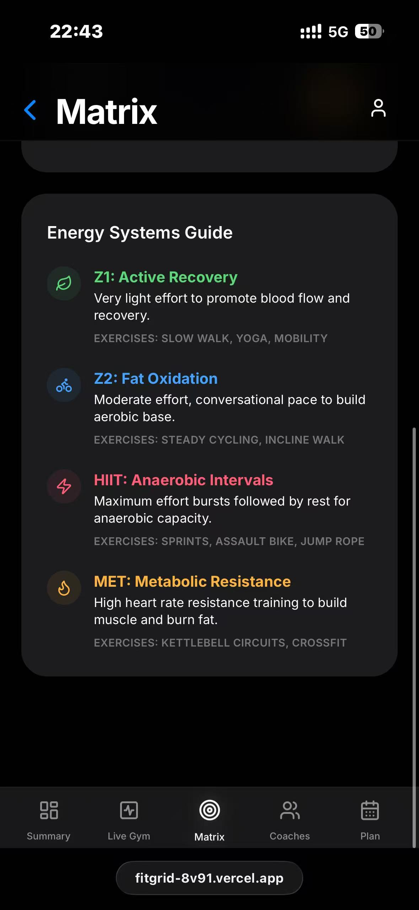
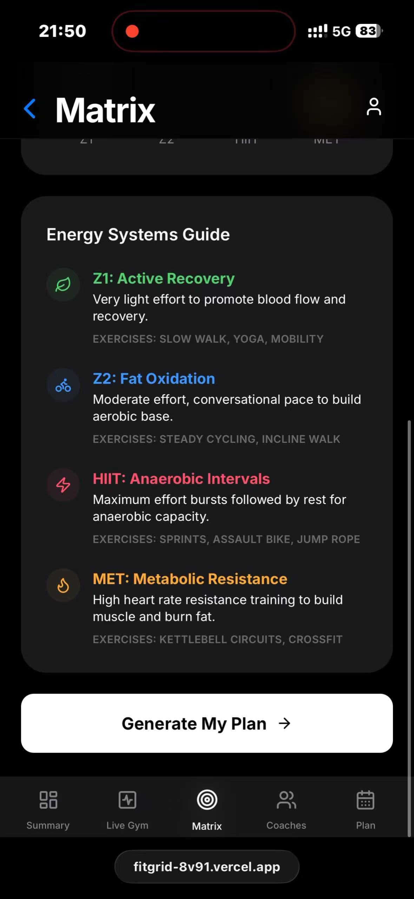

01. Motivation & Research
We selected the Active track driven by a dual motivation: addressing urgent macro-societal health trends and leveraging our team's micro-level domain expertise.
First, from a macro-demand perspective, public health awareness has surged dramatically. 'Staying active' has transitioned from a niche, hardcore hobby into a universal lifestyle goal. However, despite this growing enthusiasm, there remains a glaring gap for highly empathetic, user-centric applications. Current market solutions typically rely on complex, overwhelming numerical data—such as rigid calorie counting and advanced physiological metrics—that actively intimidate beginners. The broader public urgently needs intuitive, approachable software that lowers the cognitive barrier to scientific exercise, fostering long-term adherence rather than short-term anxiety.
Second, on a micro-level, our team possesses a profound, lived understanding of this specific domain. Compared to the Heritage or Social tracks, we are active fitness participants ourselves. We firmly believe that the most resonant user experiences are crafted when developers intimately understand their users' daily struggles. Operating simultaneously as both creators and target users grants us genuine empathy. This deep familiarity allows us to accurately capture real-world pain points—such as performance data anxiety, decision fatigue, and gym crowding—enabling us to design a product that authentically aligns with the public's practical needs and transforms exercise from a daunting task into a seamless, visual experience.
Industry Gaps: Product Analysis
| Competitor & Type | Core Pros | Existing Gaps |
|---|---|---|
|
Keep
Comprehensive Online Platform
|
Extremely comprehensive exercise library; strong community atmosphere; complete self-monitoring mechanisms. | Blind spots regarding offline physical environments; high cognitive barriers for understanding data [2]; rigid and fixed delivery scenarios. |
|
Lefit (乐刻运动)
Smart Self-Service Gym
|
Closed-loop service process; highly shortened decision-making time [1]; very low physical entry barriers. | Real-time crowdedness is invisible before arrival [3]; lacks visual progression incentives; completely missing at-home service integration. |
|
Xunji (训记)
Hardcore Tracking Tool
|
Precise quantitative data tracking; designed with experienced user logic; highly focused on workout efficiency. | Severe cognitive overload for beginners [2]; weak external motivation drivers; fails to resolve spatial and temporal constraints [3]. |
|
Supermonkey (超级猩猩)
Boutique Group Class O2O
|
Low financial commitment (pay-per-class); provides high emotional value; fast operational decisions [1]. | Heavily constrained by offline venue resources; lacks long-term visual customization; no flexible door-to-door (at-home) model. |
Academic Gaps: Literature Review
| Core Topic (Reference) | Theoretical Pros | Academic Gaps |
|---|---|---|
|
1. Visualizing Goals
(Affordances in mobile apps, 2025)
|
Confirmed that visual design significantly lowers cognitive barriers; demonstrated that app-based health empowerment enhances long-term adherence; provides cutting-edge theoretical support for setting goals via intuitive outcome images. | Lacks practical details on specific visual interaction forms; ignores the expectation gap caused by users' varying genetic differences; fails to explore how online visual goals integrate with offline gym services. |
|
2. Crowding & Anxiety
(Perceived Crowding, 2023)
|
Rigorously quantified the destructive impact of "perceived crowding" on exercise motivation; clearly stated that high spatial density triggers social anxiety; theoretically justified the necessity of "real-time crowdedness tracking" from an environmental psychology perspective. | Proposed solutions rely too heavily on passive crowd control by gym operators; lacks discussion on proactive interventions using mobile app data; fails to differentiate crowding levels across various functional zones within the gym. |
|
3. Spatial Barriers
(Home Fitness Application, 2023)
|
Identified dual constraints of time and space as core barriers to visiting physical gyms; verified the commercial potential of home fitness models in sustaining exercise routines; supported the logic of "at-home private training" to break physical space barriers. | Limited solely to one-way screen-based video workouts; overlooks the psychological inertia users develop without supervision while exercising alone at home; completely lacks exploration of the highly flexible O2O (online-to-offline) at-home coaching model. |
|
4. Decision Friction
(Goal-setting in Apps, 2020)
|
Proved that goal-setting mechanisms crucially guide health behaviors based on massive user datasets; confirmed that reducing initial decision friction greatly boosts user activity; highlighted the critical role of lowering psychological barriers in overcoming exercise resistance. | Research still focuses on traditional, abstract metrics like calories; severely lacks comparative analysis of "image-based/non-quantified" goal-setting methods; fails to create a closed-loop system connecting app goals with real-world physical spatial experiences. |


02. User Requirements
User Journey Map

Core Requirements
Visualized & Gamified Feedback
Real-time display of gym crowd density, course matching, and weekly precise training plans, allowing users to clearly see "their own schedule → results → environment", providing immediate feedback and a sense of accomplishment, thereby enhancing the enjoyment of using the gym.
Highly Realistic & Practical Integration
The system directly connects with offline gym resources, helping users avoid peak times and transforming the "troublesome fitness decisions" into a convenient, smooth and user-friendly experience. The practicality itself is the source of long-term interest.
Intuitive Low-Barrier Experience
Replace complex forms with the 3×3 Body Matrix, allowing users to set their goals simply by making selections instead of filling in cumbersome data. The operation is effortless, enjoyable and not strenuous.
Evidence of Life


03. Ideation & Alternatives


Dropdown Menus vs. Grid Matrices
Based on the feedback from A/B testing, users indicated that the menu dropdown requires more clicks to load the menu, and the operation steps are numerous and not concise enough.
Most users believe that the nine-grid matrix selection method allows for a clear understanding of what to do at a glance, and it enables quick and intuitive selection.
💡 The team ultimately chose the nine-grid matrix selection scheme as the core interaction method for user-generated group classes.
Click below to explore the interactive low-fidelity wireframes and user flows.
Open Interactive Prototype04. Technical Implementation

Data Flow & Technology Stack
-
Secure Ingestion: Capture and processing of real-time IoT check-in data.
-
Cloud Orchestration: Managed by Vercel serverless functions for managing data persistence and logic distribution.
-
Business Logic Engine: Pure Vanilla JS executing core business rules in real-time (e.g., capacity validation).
-
Real-Time Insights: Stylish Tailwind CSS interface providing live insights and simplifying monitoring.
Experience the fully functional deployment with real-time IoT synchronization and responsive dashboard.
Zhichong Zhao
ID: 2364597 | 25% Contribution
User Research & Content Lead
- Led the "Motivation & Research" section, writing a detailed rationale for the chosen track.
- Synthesized "The Gap" by systematically summarizing 4 academic papers and 4 commercial products.
- Defined stakeholders and created distinct, targeted Personas.
- Structured the Process Portfolio framework and led the Mid-term Poster production.
Shuaifei Fan
ID: 2362984 | 25% Contribution
UI/UX Design Lead
- Visualized pain points and concepts by mapping the User Journey.
- Led rapid ideation, sketching 8 UI concepts ("Crazy Eights") for playful interactions.
- Conducted in-depth comparisons of Design Alternatives to provide strong rationale.
- Developed interactive Low-Fi prototypes and visually polished High-Fi web interfaces.
Xiyu Zhang
ID: 2364446 | 25% Contribution
System Development Lead
- Built the functional web prototype, ensuring accessibility via a live URL (Vercel).
- Programmed and implemented the 3 "must-have" features defined in the requirements.
- Designed the System Architecture diagram detailing backend data and UI state management.
- Managed the GitHub repository and README, ensuring responsive design and technical compliance.
Haijin Xia
ID: 2361793 | 25% Contribution
Evaluation & Video Production Lead
- Conducted comprehensive Usability Testing with 3 authentic target users on the Alpha version.
- Documented iterative refinements via "Before & After" comparisons based on direct feedback.
- Wrote the script and recorded High-Fi prototype screen captures with call-outs for interactions.
- Edited and produced the final 2-minute CHI-style teaser video (1080p, MP4).
Joint Responsibilities
- Collaborated seamlessly on brainstorming, role assignment, and theme finalization.
- Participated in field research and user interviews to collect "Evidence of Life".
- Co-authored the Final Reflection (ethics & AI statement) ensuring academic integrity.
05. Evaluation & Reflection
We conducted an usability test with three users. Two of them stated that all the functions of the product could be completed normally. However, one user stated that after the system generated the movement ratio, they were unsure of what to do next.
Therefore, we have added a button for generating exercise plans to guide users in choosing the appropriate group class times.
Based on the insights gathered from the usability testing, we refined our design. The following comparison highlights the key modifications made to address user feedback.

Identified Issue:
The Alpha version lacked a clear Call-to-Action (CTA) at the bottom of the screen. Users reviewed the matrix data but were unsure of how to proceed to actual scheduling.

Design Solution:
Added a prominent, high-contrast "Generate My Plan →" button. This immediately guides the user from data review to actionable planning.
Post-Iteration Feedback
After the modification, we conducted follow-up interviews with three users. All of them stated that upon seeing the button, they immediately understood that clicking it would enable them to create their own exercise plan.
Health Data Privacy
The system collects sensitive data such as the user's current body type, ideal body type, exercise habits, and frequency of visits to the gym. If the data storage is not secure and is used for analysis or advertising without the user's consent, it will infringe upon user privacy and pose a risk of health data leakage. Therefore, we are committed to continuously maintaining the system with strict encryption protocols to protect user privacy.
Safety in Health Advice
The system offers automatically generated weekly training plans, but they are not evaluated one-on-one by doctors or professional coaches. For users with injuries, chronic diseases, or weak constitutions, there may be risks associated with exercise. We acknowledge this limitation and will implement mandatory liability disclaimers and recommend consulting professionals for users with specific health conditions.
AI Usage Statement
We utilized AI language models primarily as an assistive tool for CSS component optimization and English content polishing. The team maintained full manual control and original authorship over core architectural decisions, database logic, and UI/UX design concepts.